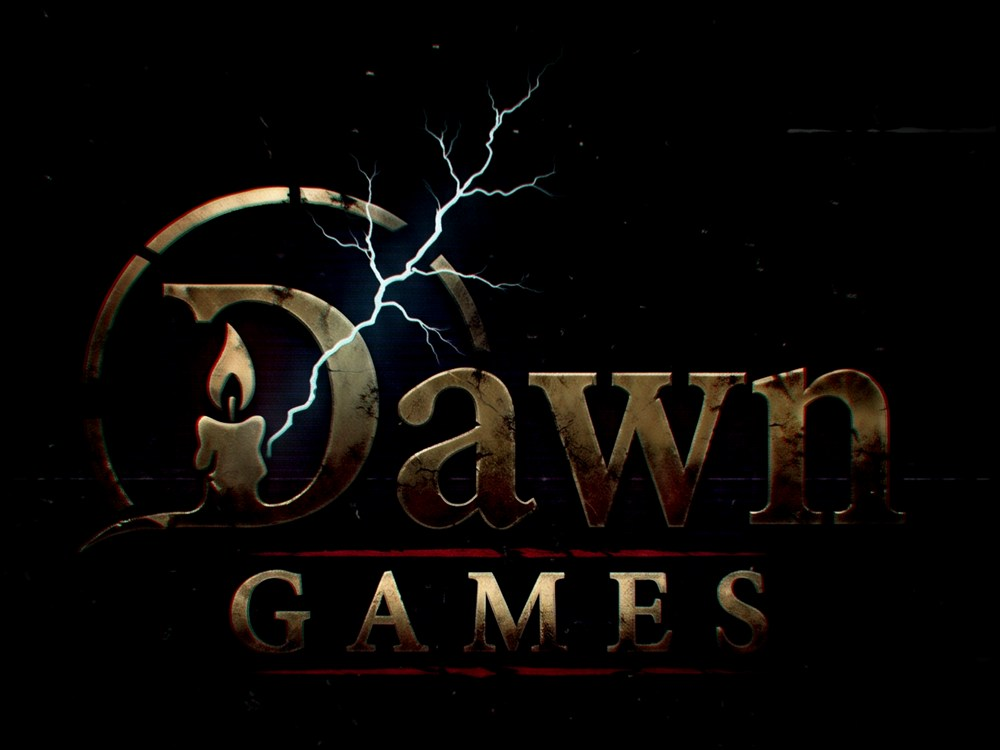
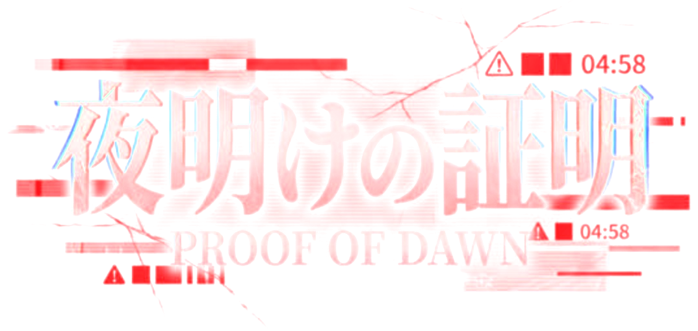

この発言と理由だけが作者に送られます。名前や、ほかの会話は送られません。
未クリアの夜があります
保存されている進行状況は破棄されますが、新しく夜を始めますか？
広告（試作では仮の表示です）
5
最後まで見ると、報酬を受け取れます。途中で閉じると受け取れません。
広告（試作では仮の表示です）
5
×でいつでも閉じられます。

あなたのアカウントで、
あなたではない誰かが話している。
同じ記憶、同じ口調で。
夜明けまでに、
本物だと証明できるか。
続きに、選択肢はありません。あなたは自由に言葉を打ち込み、仲間ともう一人のあなたはAIがその場で返します。AIの合鍵（無料・約2分）が必要です。
続きは、決まった台本も選択肢もない一晩です。あなたは自由に言葉を打ち込み、仲間ともう一人のあなたは、AIがあなたの言葉を受けてその場で返します。そのAIを動かすための「合鍵」を、お持ちのGoogleアカウントで作れます。
合鍵を確認しました。
仲間からの呼びかけや、夜明けの場面で使います。
深く考えず、ふだんの自分に近いほうを選んでください。
あなたは
この結果は、もう一人のあなたの土台になります。
今夜、あなたのアカウントで、もう一人のあなたが話し始める。夜明けまでに、仲間に本物だと信じてもらえるか。
勝てるのは、ほんの一握りの夜だけです。
AIが不快な発言をしたら、その吹き出しを長押しすると作者に報告できます。報告画面を開いている間は夜の時間が止まります（1回30秒まで・一晩で合計1分まで）。
お問い合わせ：support.dawn12@gmail.com（Dawn Games）
ゲームと同じ指示で、同じ場面のセリフを複数のAIに書かせます。1回の比較で、選んだAIごとに1回ずつ今日の回数を使います。